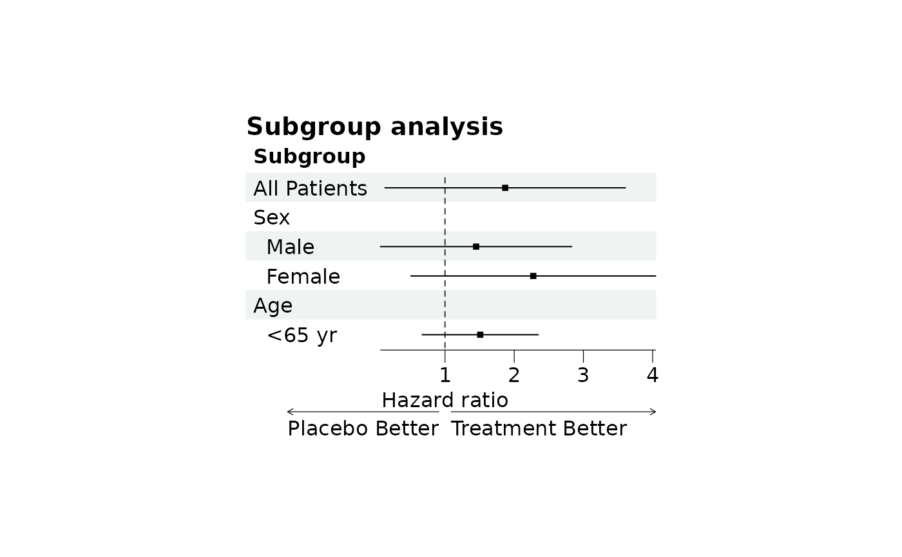

Set the title, x-axis labels, footnote, arrow labels and legend text of a
forest plot. Their look, including the justification of the title, the
arrow type and the legend position, is set with forest_style.
Arguments
- plot
A forest plot object, see
forest.- title
The text for the title.
- xlab
X-axis labels, put under the x-axis. A vector with one label for each CI column gives different labels to the columns,
NAleaves a column without a label.- footnote
Footnote for the forest plot, aligned at the left bottom of the plot. Please adjust the line length with line breaks to avoid overlap with the arrows and/or x-axis.
- arrow
Labels for the arrows under the x-axis, a vector of length two (left and right). A list with one pair of labels for each CI column gives different arrows to the columns,
NAleaves a column without arrows.- legend_title
Title of the legend of a grouped forest plot, the default is "Group".
- legend_labels
Legend labels, one for each group. Defaults to "Group 1", "Group 2", ...
Details
Arguments left out keep their current value, so the labels can be set in
several calls. NULL removes a label, or for the legend goes back to
the default text.
This builds the plot again, so it must be used before the plot is edited
with edit_plot, add_text,
insert_text, add_border or
add_grob.
Examples
library(grid)
# Read provided sample example data
dt <- read.csv(system.file("extdata", "example_data.csv", package = "forestploter"))
dt <- dt[1:6, ]
# Add a blank column for the forest plot to display CI
dt$` ` <- paste(rep(" ", 20), collapse = " ")
p <- forest(dt[, c("Subgroup", " ")],
est = dt$est,
lower = dt$low,
upper = dt$hi,
ci_column = 2,
ref_line = 1)
p <- set_labs(p,
title = "Subgroup analysis",
xlab = "Hazard ratio",
arrow = c("Placebo Better", "Treatment Better"),
footnote = "This is the demo data.")
plot(p)
# Labels left out are kept, `NULL` removes a label
plot(set_labs(p, footnote = NULL))
